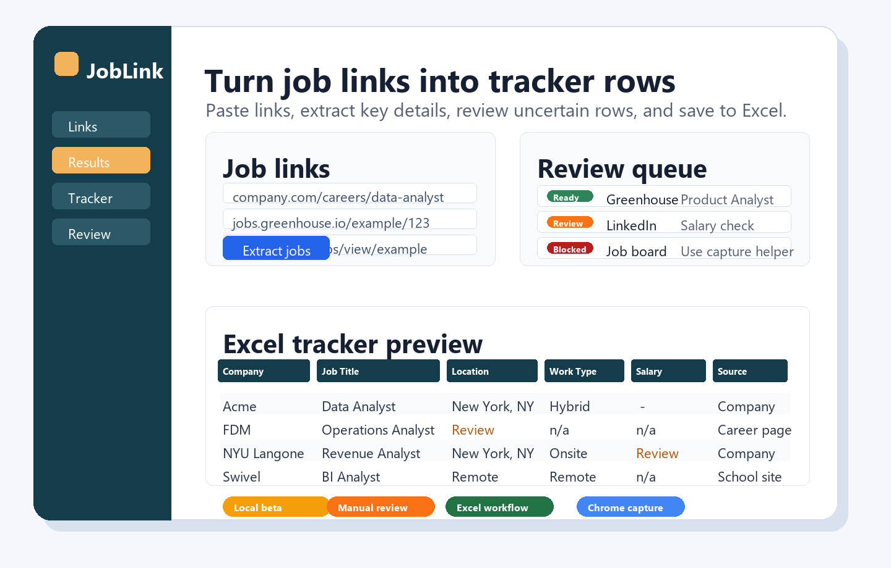

Extract useful fields
Pulls company, title, location, work type, salary, source, and job link details from job posting pages.
Local beta for job seekers
JobLink Tracker is a Python + Excel project that helps reduce the repetitive copying that comes with tracking a lot of job applications.

What it does
Pulls company, title, location, work type, salary, source, and job link details from job posting pages.
Formats results into Excel-friendly rows so applications stay easier to compare and follow up on.
Flags uncertain results instead of pretending every scrape is perfect.
Workflow
Use the local web beta, command line, or Excel input sheet.
The scraper looks for structured job data and common career-page patterns.
Blocked sites, login-only pages, salary text, and work type fields may need a human check.
Download results or update an existing tracker workbook.
Honest status
Open source beta